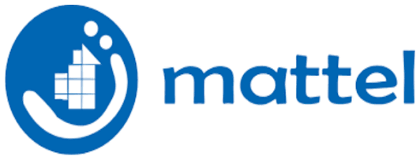
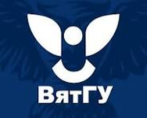
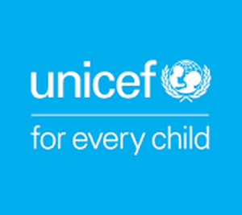

I build data systems that turn raw data into business decisions.
Data pipelines, cloud data platforms, ML risk models and dashboards. 4+ years delivering for clients in finance, business, healthcare and industry.

Hiring for a specific role?
Each profile is tailored to the role: why I'm a fit, the evidence, the tools, and answers to the questions hiring managers usually ask.
Data Analyst
Dashboards, KPIs and analysis that lead to decisions.
View profile →02 / profileData Engineer
Reliable, low-cost pipelines and cloud data platforms.
View profile →03 / profileData Scientist
Calibrated models, deployed and translated into dollars.
View profile →04 / profileIT Project Manager
Technical delivery: scope, risk and decisions on paper.
View profile →05 / profileResearcher
Research rigour, with the engineering to back it up.
View profile →Where I've done this work
4+ years of data work across banking, telecom, industry, education and international clients.
Data Analyst · Brishka Consulting
- Data analysis and data pipelines for international clients
Data Analytics Instructor · Ural Federal University
- Taught data analytics to a cohort of 30 students
Data Analyst · Freelance · Upwork & Fiverr
- Data analysis and dashboard projects for international clients
Data Analyst Intern · BMCI Bank
- Built Power BI dashboards on DirectQuery, cutting manual reporting by 78%

MIntern · Mattel
- Internship at one of Mauritania's national telecom operators
Credit Risk & Collections Prioritization Platform
An end-to-end AWS platform that predicts loan default, converts it into dollar expected loss, and hands a collections team a ranked worklist. I built it alone, from infrastructure through to the dashboard.

- Incremental ETL into DynamoDB, scheduled with GitHub Actions
- Calibrated default model served as a live Lambda API in Docker
- 3-page Power BI dashboard with a what-if recovery-rate control
- Project charter, RAID log and 5 Architecture Decision Records
Other projects and results
Industrial defect detection
YOLOv8 model that detects defects on industrial parts with 99% accuracy.
Email security classifier
Text classification model for detecting malicious or unwanted email.
Banking reporting automation
Power BI dashboards on DirectQuery that cut manual reporting by 78%.
SDG 3.2 research
Analysis of newborn and under-5 mortality in least developed countries.
Four ways I can help your team
One person who covers the whole path: the data comes in, a model or analysis runs on it, a decision-maker uses the result, and it's all documented.
Data pipelines & cloud
ETL/ELT, incremental loads, NoSQL & SQL design, AWS, Docker, scheduled automation.
Analytics & BI
Power BI dashboards, DAX, KPI design, what-if analysis, reporting that people actually use.
ML & risk models
Classification, calibration, feature importance, expected-loss and prioritisation models.
Data project management
Charters, RAID logs, ADRs, phased delivery and stakeholder reporting.
Degrees
BSc MIAGE (IT applied to business management)
Université de Nouakchott Al-Assriya

VyatSUVyatka State University
Kirov, Russia
MSc IT Innovation in Business
Ural Federal University
PhD candidate, Management of Organizational Systems
Ural Federal University
Certificates
Effective Supervision: From Manager to Leader
Minnesota State University, Mankato
AWS Certified Machine Learning Engineer – Associate
Amazon Web Services
Apache Kafka project

UNICEFSituation Analyses in Emergencies Preparedness and Response
UNICEF
 Bpi
BpiDiplôme en Transformation à l'ère numérique
Université Bpifrance
Open to remote roles worldwide
I'm looking for remote positions where I can own data work end to end, from the pipeline to the decision.
Full-time remote
A permanent role on a data, analytics or ML team, working remotely with clear goals and room to grow.
Contract & consulting
Fixed-scope projects or longer contracts: pipelines, dashboards, scoring models and audits of existing data systems.
International organisations
Consultant and fixed-term roles with UN agencies, development banks, NGOs and research institutes.
How I work
- Agree the goal and scope in writing first
- Show working output every week, not slides
- Record every key decision as an ADR
- Hand over with a README, runbook and diagrams
Practicalities
- Remote, with working hours that overlap Europe, the Gulf and US East
- Works in English, French, Arabic and Russian
- Full-time, contract, consultant and fixed-term roles
- Available to start quickly
Engineer, analyst and project manager in one
I'm a Data Systems Engineer with 4+ years of experience across finance, business, healthcare and industrial clients, including IT project management. I currently work as a Data Analyst at Brishka Consulting, building data pipelines and analytics for international clients.
I was educated in Mauritania and Russia and work in four languages. That makes me comfortable on international teams and with francophone, Arabic-speaking and CIS clients.
I'm also a part-time PhD candidate researching the management of organisational systems, which shapes how I think about data inside real organisations.
- Languages: Arabic (native), French and English (fluent), Russian (professional)
- Research: 1 journal article, 3 conference papers, 3 conference prizes
- Teaching: Data Analytics Instructor at Ural Federal University
- Sectors: banking, telecom, industry, education, development
Have a data problem or a contract role?
Tell me what you're working on. I reply within one business day.